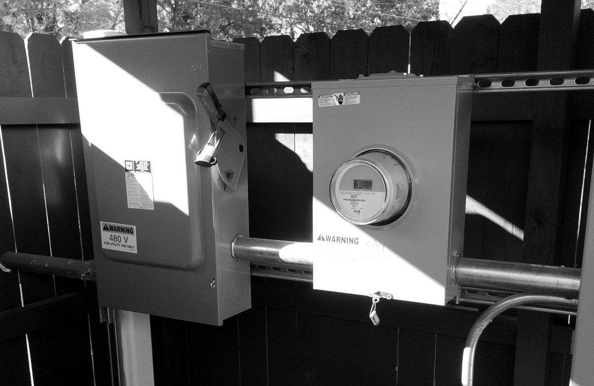

Electrical. Solar. Welding. Operating. Construction. Ranch builds. Plumbing. 28 years in construction. We build long-term working relationships. Straightforward prices, hard work, and a job worth calling us back for.

Licensed electrician. Electrical work from service upgrades and new installations to motors and pumps — plus new circuits, lighting, outlets, shop and barn power, troubleshooting, and property electrical. Scoped per job — safety first.
Electrician in Wolfforth · Electrician in Lubbock · Barn and well pump wiring

Caliche roads, dig and dump, and site work. Equipment work for rural dirt jobs when the place needs more than a shovel.

Working corrals, pens, alleys, and basic handling layouts for cattle that actually move.

New fence, rebuilds, gates, and line repairs. Materials matched to the ground and the job.

Pads, footings, flatwork, pours, and structural framing for outbuildings, lean-tos, and additions.

Ranch and farm plumbing, water lines, and pipeline. Livestock troughs, shop and house lines, repairs, and replacements for rural and small-town places.
Odds and ends around the property, small tear-outs, load-and-dump runs, “nobody will call me back” jobs. If it’s legal and safe, we’ll tell you if we can take it and what it costs. No mystery.
Cross Buck Construction is based in Wolfforth, Texas, and run by Zach, a licensed electrician. We handle electrical work for homes, shops, barns, ranches and small businesses in Wolfforth, Lubbock, Brownfield, Lamesa, Midland, Odessa, Big Spring, Snyder, Sweetwater, Amarillo and Muleshoe, Texas, and Hobbs, New Mexico. Call or text (806) 496-6999.

Read more: Electrical services · Electrician in Wolfforth, TX · Electrician in Lubbock, TX · Barn and well pump wiring
Zach is a licensed electrician. License details are available on request — call (806) 496-6999.
Electrical work in Texas must be done by licensed individuals working through a licensed electrical contractor (TDLR).
Cross Buck Construction covers nine trades: electrical, solar, welding, operating and dirt work, corrals, fences and gates, concrete and framing, plumbing, and general property work.
We serve these towns. If yours isn’t listed, text us the town and we’ll give you a straight yes or no.
Our area covers West Texas and Eastern New Mexico, from Hobbs, NM to Sweetwater to Amarillo to Muleshoe, TX.
Not sure your town is in range? Ask anyway — we will say yes or no without the runaround. We do not cover all of Texas or every town automatically.
West Texas and Eastern New Mexico, from Hobbs, NM to Sweetwater to Amarillo to Muleshoe, TX. Towns: Wolfforth (our base), Lubbock, Brownfield, Lamesa, Midland, Odessa, Big Spring, Snyder, Sweetwater, Amarillo and Muleshoe in Texas, plus Hobbs, New Mexico. Not sure you are in range? Text your town to (806) 496-6999.
Yes. Zach is a licensed electrician. Call (806) 496-6999 if you would like the license details.
Yes. We look at your current panel and what you plan to add, such as AC or shop tools, then quote the work.
Yes. Motors and pumps, shop and barn power, and solar well installs are all on our service list.
Call or text (806) 496-6999, or email email@crossbuckconstruction.com. Send the town, the job, and photos if you can.